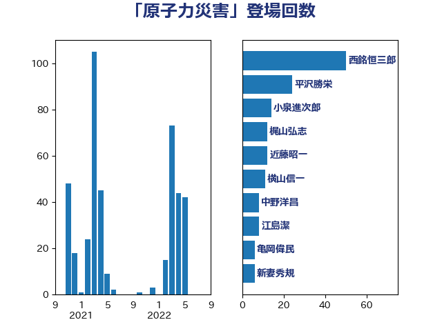

単語「原子力災害」

| 西銘恒三郎 | 自由民主党 | 50 回 |
| 平沢勝栄 | 自由民主党 | 24 回 |
| 小泉進次郎 | 自由民主党 | 14 回 |
| 梶山弘志 | 自由民主党 | 12 回 |
| 近藤昭一 | 立憲民主党 | 12 回 |
| 横山信一 | 公明党 | 11 回 |
| 中野洋昌 | 公明党 | 8 回 |
| 江島潔 | 自由民主党 | 8 回 |
| 亀岡偉民 | 自由民主党 | 6 回 |
| 新妻秀規 | 公明党 | 6 回 |
| 武田良太 | 自由民主党 | 6 回 |
| 青山繁晴 | 自由民主党 | 6 回 |
| 岩渕友 | 日本共産党 | 5 回 |
| 井上信治 | 自由民主党 | 4 回 |
| 山口壯 | 自由民主党 | 4 回 |
| 柴田巧 | 日本維新の会 | 4 回 |
| 石井正弘 | 自由民主党 | 4 回 |
| 福島伸享 | 無所属 | 4 回 |
| 進藤金日子 | 自由民主党 | 4 回 |
| 上田清司 | 国民民主党 | 3 回 |
| 冨樫博之 | 自由民主党 | 3 回 |
| 加藤勝信 | 自由民主党 | 3 回 |
| 塩村あやか | 立憲民主党 | 3 回 |
| 小沼巧 | 立憲民主党 | 3 回 |
| 岡田直樹 | 自由民主党 | 3 回 |
| 庄子賢一 | 公明党 | 3 回 |
| 本田太郎 | 自由民主党 | 3 回 |
| 泉田裕彦 | 自由民主党 | 3 回 |
| 芳賀道也 | 国民民主党 | 3 回 |
| 野上浩太郎 | 自由民主党 | 3 回 |
| 金子恵美 | 立憲民主党 | 3 回 |
| 高橋千鶴子 | 日本共産党 | 3 回 |
| 三谷英弘 | 自由民主党 | 2 回 |
| 佐藤啓 | 自由民主党 | 2 回 |
| 國重徹 | 公明党 | 2 回 |
| 堀内詔子 | 自由民主党 | 2 回 |
| 小山展弘 | 立憲民主党 | 2 回 |
| 岩田和親 | 自由民主党 | 2 回 |
| 岸田文雄 | 自由民主党 | 2 回 |
| 平木大作 | 公明党 | 2 回 |
| 早坂敦 | 日本維新の会 | 2 回 |
| 若松謙維 | 公明党 | 2 回 |
| 馬場雄基 | 立憲民主党 | 2 回 |
| 高橋はるみ | 自由民主党 | 2 回 |
| 伊東信久 | 日本維新の会 | 1 回 |
| 佐々木さやか | 公明党 | 1 回 |
| 嘉田由紀子 | 無所属 | 1 回 |
| 塩崎彰久 | 自由民主党 | 1 回 |
| 室井邦彦 | 日本維新の会 | 1 回 |
| 山崎誠 | 立憲民主党 | 1 回 |
| 山本太郎 | れいわ新選組 | 1 回 |
| 岸真紀子 | 立憲民主党 | 1 回 |
| 川田龍平 | 立憲民主党 | 1 回 |
| 徳永エリ | 立憲民主党 | 1 回 |
| 新垣邦男 | 立憲民主党 | 1 回 |
| 枝野幸男 | 立憲民主党 | 1 回 |
| 根本幸典 | 自由民主党 | 1 回 |
| 横沢高徳 | 立憲民主党 | 1 回 |
| 清水真人 | 自由民主党 | 1 回 |
| 牧義夫 | 立憲民主党 | 1 回 |
| 石垣のりこ | 立憲民主党 | 1 回 |
| 神谷裕 | 立憲民主党 | 1 回 |
| 空本誠喜 | 日本維新の会 | 1 回 |
| 舟山康江 | 国民民主党 | 1 回 |
| 菅義偉 | 自由民主党 | 1 回 |
| 菊田真紀子 | 立憲民主党 | 1 回 |
| 西田昭二 | 自由民主党 | 1 回 |
| 谷公一 | 自由民主党 | 1 回 |
| 赤羽一嘉 | 公明党 | 1 回 |
| 野田国義 | 立憲民主党 | 1 回 |
| 野田聖子 | 自由民主党 | 1 回 |
| 阿部知子 | 立憲民主党 | 1 回 |
| 青木愛 | 立憲民主党 | 1 回 |